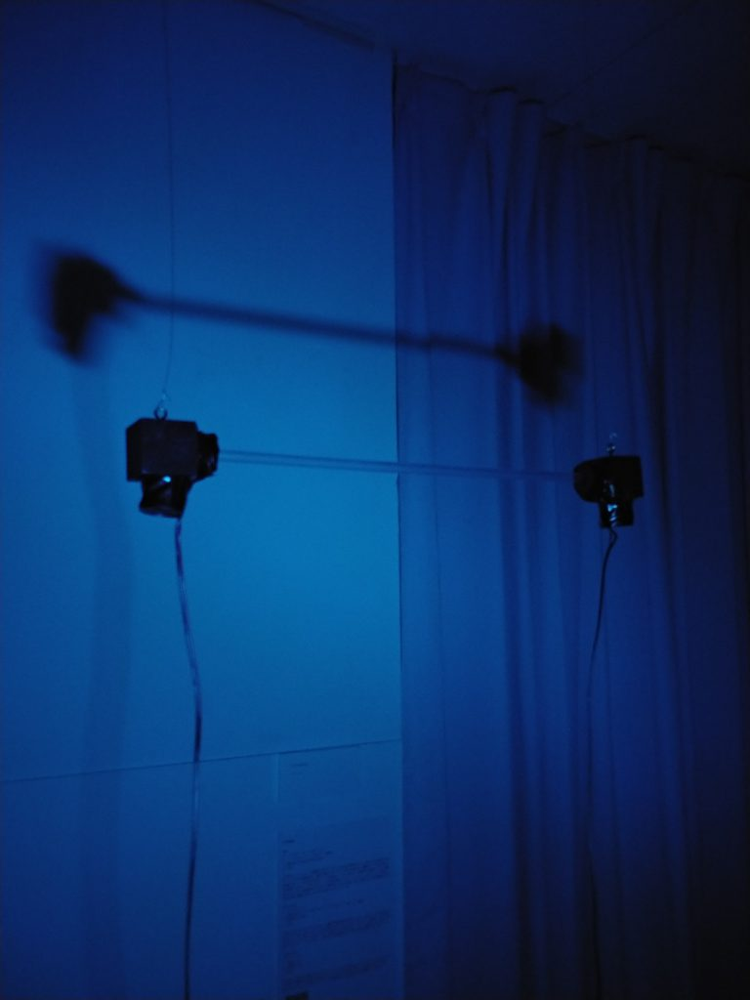

intervention

サウンド・インスタレーション / Sound installation
※time : ∞ (infinity)
これは、 Raspberry Piにプログラムされた、一定間隔で自動で速度が変化するメトロノームにより、2chの出力信号を青色LEDによる光・小型スピーカーによる音で表現した作品である。両者はアクリルチューブで繋がれ、互いに干渉しあう形になっている。しかし、あるタイミングでは信号が一致する場面もあり、これは、個が個であることの同一性、いわゆるアイデンティティの「同期」と「分断」を「境界を意識しない」形態で表現した構造になっている。
Raspberry Pi、アンプ、LED、スピーカー、アクリルチューブ、木材、ピアノ線ほか
2020年